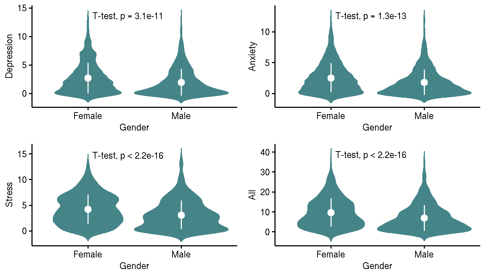
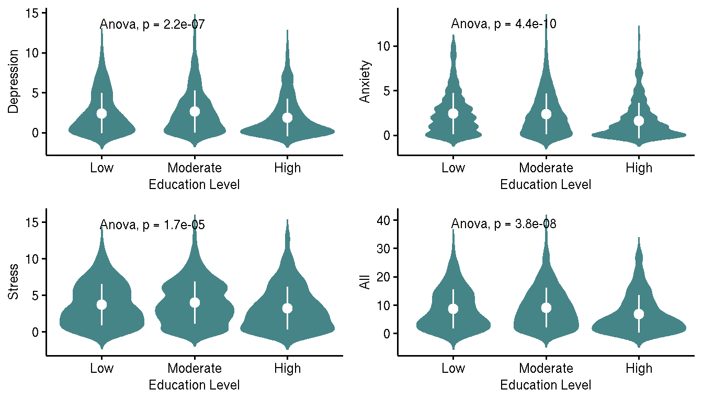
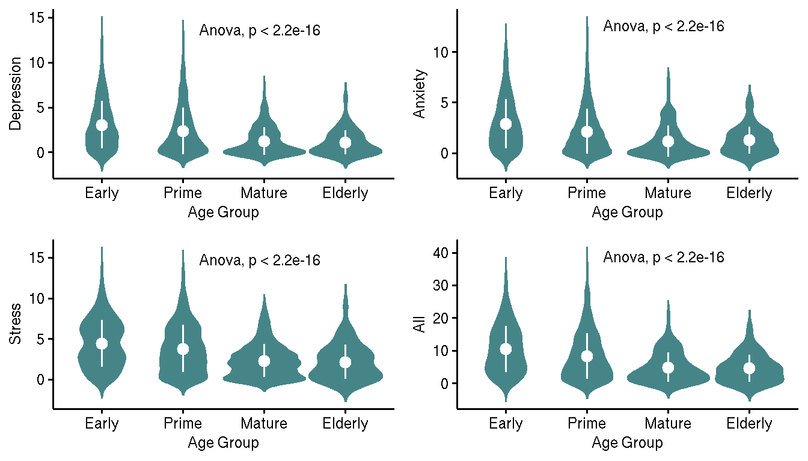

- What do we know about COVID-19?
- How do we solve current issue?
- Potentially arising problem?
Quantify psychological distress among residents
Assumes binary gender classification
Mild distress to none at all; Low DASS-21 score
| Depression | Anxiety | Stress | |
|---|---|---|---|
| Mild | 18.88 | 23.8 | 10.69 |
| Moderate | 9.12 | 9.4 | 3.60 |
| Severe | 0.94 | 1.9 | 0.59 |
| Note: | |||
| Value as percentage |



| Estimate | Std. Error | t value | Pr(>|t|) | |
|---|---|---|---|---|
| (Intercept) | 3.06 | 0.07 | 41.97 | 0.00 |
| Male | -0.48 | 0.06 | -8.16 | 0.00 |
| Age Group | ||||
| Prime | -0.37 | 0.07 | -5.23 | 0.00 |
| Mature | -0.93 | 0.12 | -7.91 | 0.00 |
| Elderly | -1.02 | 0.20 | -5.11 | 0.00 |
| Education | ||||
| Moderate | 0.15 | 0.07 | 2.02 | 0.04 |
| High | -0.09 | 0.09 | -0.96 | 0.34 |
| VIF: {1.03, 1.23, 1.22} | ||||
| Harrison-McCabe, HMC: 0.51 p=0.78 | ||||